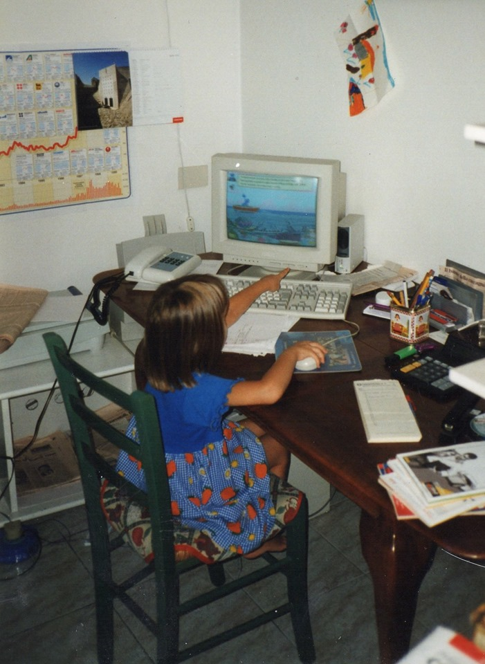
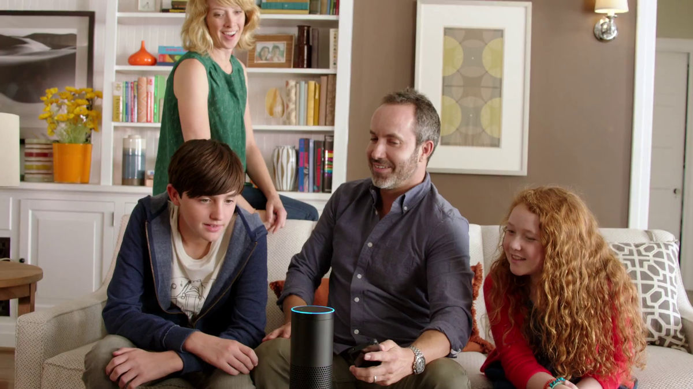
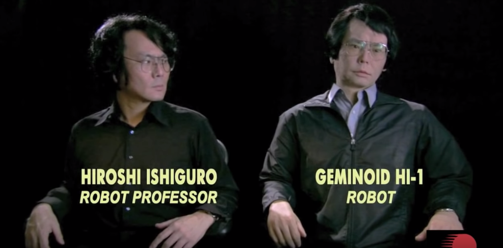
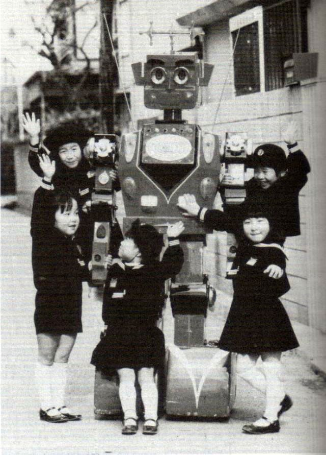
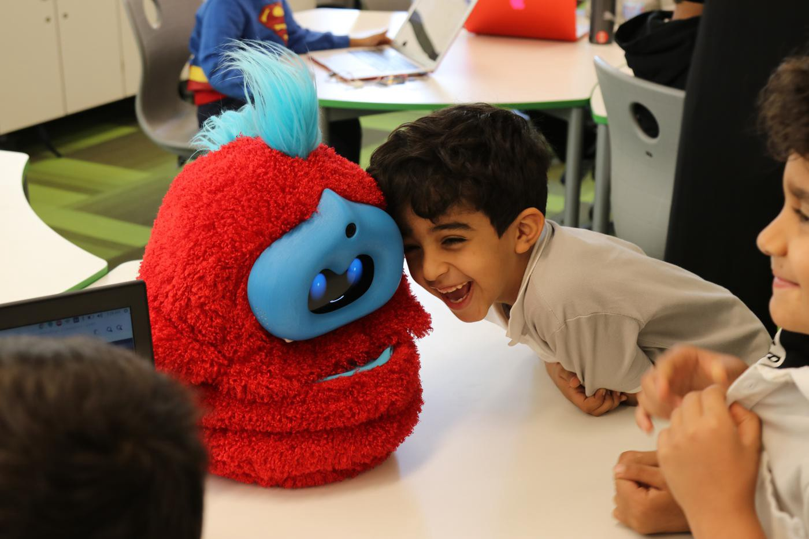
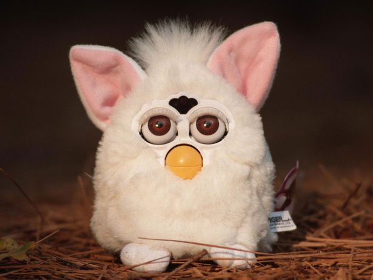
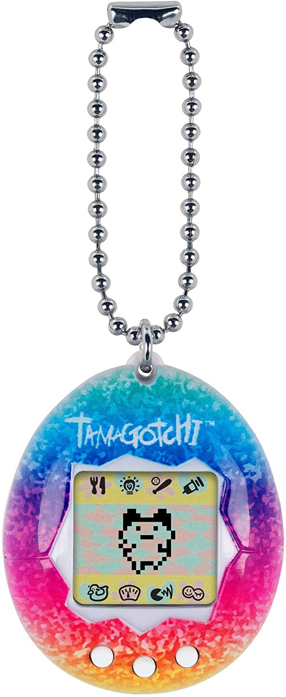
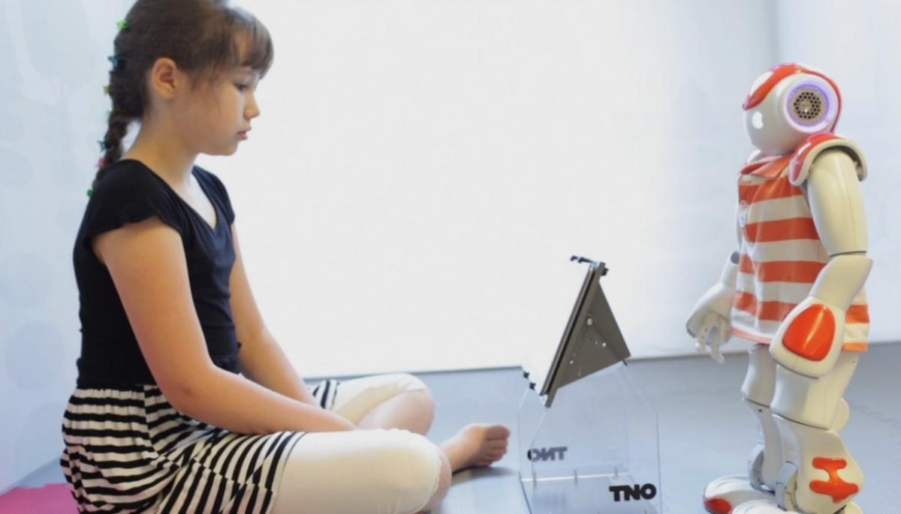

Brainchild
1
of Humanity
1. An original idea, plan, or invention. Source: Cambridge Dictionary;
2. Source: Cambridge Dictionary;
3. Source: Cambridge Dictionary;
4. Grover’s Travels was a CD-ROM game and developed in 1998 by Encore Software and Sesame Workshop.
5. Used to refer to the unpleasant feeling that some people have when they see robots (machines that can carry out actions automatically), or pictures of a human being created by a computer, that appear very similar to a living human. Source: Cambridge Dictionary
6. forum.nl/nl/agenda/ai-more-than-human
7. Eckhouse, J.(1984). A Useful Robot is Intelligent - And Ethical. San Francisco Chronicle
8. Source: sciencefriday.com/segments/the-origin-of-the-word-robot
9. Objects, artifacts, or structures that interact in a network with people (“human actors”) by constraining, permitting, facilitating, promoting,or responding to human actions; Source: igi-global.com/dictionary/parawork/3823
10. Designed by Danish architecture office BIG.
11. geminoid.jp
12. Read more: 52-insights.com/hiroshi-ishiguro-sentient-love-robots-android-interview-technology
13. The belief that all natural things, such as plants, animals, rocks, and thunder, have spirits and can influence human events. Source: Cambridge Dictionary;
14. A practice of imbuing technology with human and spiritual characteristics. It can also be viewed as a culture that assumes that technology, humanity and religion can be integrated into one entity. Source: igi-global.com/dictionary/techno-animism/77914
15. Read more: Borody, W.A. “The Japanese Roboticist Masahiro Mori’s Buddhist Inspired Concept of ‘The Uncanny Valley’.” Journal of Evolution and Technology, vol. 23, no. 1, Dec. 2013, pp. 31–44. Via: jetpress.org/v23/borody.html
16. Ito, Joi. “Why Westerners Fear Robots and the Japanese Do Not.” Wired, Conde Nast, July 2018.
17. Ito, Joi. “Why Westerners Fear Robots and the Japanese Do Not.” Wired, Conde Nast, July 2018.
18. Ito, Joi. “Why Westerners Fear Robots and the Japanese Do Not.” Wired, Conde Nast, July 2018.
19. The showing or treating of animals, gods, and objects as if they are human in appearance, character, or behaviour. Source: Cambridge Dictionary;
20. Inside the Robot Kingdom: Japan, Mechatronics, and the Coming Robotopia, by Frederik L. Schodt, Kodansha International, 1990, p. 196
21. Source: Cambridge Dictionary
22. Read more: Riess, H. (2017). The Science of Empathy. Retrieved from: ncbi.nlm.nih.gov/pmc/articles/PMC5513638/
23. Read more: Darling, K, Extending Legal Protection to Social Robots: The Effects of Anthropomorphism, Empathy, and Violent Behavior Towards Robotic Objects (April 23, 2012). Via: papers.ssrn.com/sol3/papers.cfm?abstract_id=2044797
24. Read more: ncbi.nlm.nih.gov/pmc/articles/PMC2781892/
25. Breazeal C., Scassellati B. 2000 Infant-like social interactions between a robot and a human caregiver. Adap. Behav 8, 47–72 [Google Scholar] [Ref list]
26. Read more: https://www.52-insights.com/hiroshi-ishiguro-sentient-love-robots-android-interview-technology/
27. The part of philosophy that studies what it means to exist. (Source: Cambridge Dictionary)
28. Harman, G. (2018). Chapter 2 / Aesthetics Is the Root of All Philosophy. In Object-Oriented Ontology: A New Theory of Everything (p.45)
29. Harman, G. (2018). Chapter 2 / Aesthetics Is the Root of All Philosophy. In Object-Oriented Ontology: A New Theory of Everything (p.48)
30. Harman, G. (2018). Chapter 2 / Aesthetics Is the Root of All Philosophy. In Object-Oriented Ontology: A New Theory of Everything (p.49)
31. Via: media.mit.edu/articles/the-new-robot-in-school
32. Via: spectrum.mit.edu/fall-2017/the-new-robot-in-school
33. Via: phobe.com/furby/guts.html
34. Via: tombattey.com/design/case-study-tamagotchi
35. Via: http://www.aliz-e.org
36. Via: http://www.aliz-e.org
37. Via: http://www.aliz-e.org
38. Inside the Robot Kingdom: Japan, Mechatronics, and the Coming Robotopia, by Frederik L. Schodt, Kodansha International, 1990 (p. 79)
Abstract
In my thesis I investigate the empathic relationship between humans and robot/interfaces. I have always been fascinated by robots since I was a child, but, at the same time I did, and still do, find them them very unsettling. There is something about this non-human factor that captivates me and that drives me to dig into this subject. I want to find out how can aesthetics assist in this process of designing empathy in lifeless machines. And what can I do, from the perspective of a designer, to make this process easier and faster?
I have been approaching this subject in many different ways: I’ve been reading articles from the MIT social robots group and explored into Japan’s tradition of animism. In my study cases I focus especially on children’s social robots.
As a designer, I am a mediator in between these two worlds, exactly like I am this writer/mediator in my stories: first I write in the position of humans, then I write in the position of a robot.
This approach helped me exploring this topic in a more experimental and personal way and made me reflect on my own empathy towards the characters of the stories as well.
Pre-prologue
The year was 1999, the end of a millennium, the year where there was a problem called the Y2K. For the first time people were really scared about technology, they did not know what was going to happen. There was this fear that all computers would stop working on December 31, 1999. But that’s a story for another time.
Prologue
Robot, noun [C] (MACHINE): a machine controlled by a computer that is used to perform jobs automatically.2
Robot, noun [C] (PERSON): someone who does things in a very effective way but never shows their emotions.3
In the year 1999 I was 4 years-old and I was still unaware I was going to be a big sister. A picture from that exact year, came to memory (fig.1). In this picture I was sitting at my dad’s table, in my parent’s house in Italy. Computer mouse in my right hand, while my left hand was pointing at the big old Compaq computer screen. I was showing my mom the game I was playing. My mom behind me at that exact moment was pressing the camera shutter. I was playing Grover’s Travels 4 (fig. 2-4), probably a gift from my Dutch grandma, no one remembers very well who got it for me. But we do remember it was one of my favourites CD-ROM. It was an educative game in which there were activities designed to teach numbers, story comprehension and emotions. As a bilingual child I had the Dutch version of the game and I could understand it pretty well. I still remember Grover, the leading character of the game and I still remember I felt empathy for him.
Grover was my friend.
The computer game was teaching me numbers, letters and even the basics of a second language, but I didn’t really notice at the time: I was only enjoying the game, I had to help my friend Grover.
Then, 5 years later, it was the year 2004. I was watching cartoons on tv with my small sister when an ad came on. It was EMIGLIO © : a robot friend (fig.5). The ad was about a robot which you could have fun with, it allowed to record your own voice and it would repeat it. Everyone in that advertisement seemed so happy to play with it. It was most probably my first robot encounter. I don’t know why, but that moment is still stuck in my head. I was eight years-old at the time and I was intrigued by it, but at the same time I didn’t like it, I had a weird feeling about it. I would have rather played with my Barbie dolls instead: they did not move around by themselves and they did not talk.

Me in front of the computer playing the game (fig.1)
Stills of the game Grover's Travels (fig.2-4)
Still of advertisment EMIGLIO (fig.5)
Now, I am 23 years-old and I want to start to love the Uncanny Valley5 feeling these robots give me.
Writing about my childhood makes me realise how different the childhood of children nowadays is. As I was growing up, the internet and technology were also growing. Children nowadays, however, are the very first generation where artificial intelligence and intelligent robots are present. As we all know,they are basically present in our everyday life, think of Alexa (fig.6), or Siri on your phone, or even a Roomba that cleans your floor, or a car with automated driving: right now we are learning to live with them.
They help us, they’re programmed and designed to make our life easier and faster. We have always had robots since the 1900, they were shaped like people and they were stationary and couldn’t do much by themselves, but these new ones are different. They are able to interact without the aid of humans. They’re evolving very fast but at the same moment new ethical and social questions are arising. They're becoming a species on their own. We make them look like us, we make them move like us. What is going to happen when we start to have strong emotions towards them? To be clear, in this thesis, I want to focus on social robots, and especially for my study cases, the ones designed for children. Why? You may ask. Well, because social robots are particularly designed to interact with us and mimic our behaviour. And children’s robot, in particular, display even more emotions as children seek and show more empathy towards non-human objects.

Family interacting with Alexa (fig.6)
Social Robots
“The rapid growth and increasing intelligence of industrial and personal robots requires that humans program ethics into the machines to prevent them from running amok” Nobel laureate Glenn Seaborg said during a speech to the Commonwealth Club in San Francisco. He said: “Robots soon will become intelligent enough to initiate actions,
make independent decisions and develop a rudimentary understanding of the world. Ethical programming must be an integral component of robots’ growing intelligence”7.
Karel Capek was a playwright from Czechia. He was the one who invented the word “Robot”, first introducing it in his play, Rossum’s Universal Robots (R.U.R). The word Robot comes from an old Church Slavonic word, robota, for “servitude,” “forced labor” or “drudgery”8.
Our species, Homo Sapiens, took about 315,000 years of evolution from its initial ape state. We first had to learn to balance ourselves on two legs and learn how to use our opposable thumbs, we learnt how to create a language and then a writing system, we discovered fire, we discovered the wheel, and so on. Amazingly we learnt all of this by ourselves. We are now at an evolutionary point where we are using our knowledge to build intelligent machines and we are building them at a very fast speed, learning so much, in so little time. We are sharing our knowledge with them.
These non-human actors9 have power and they’re autonomous.
In the past, it was rare for things to interact with each other and to interact with humans.
For example a century ago, no one would have ever imagined that in the restaurant of the LEGO House in Billund, Denmark
10, a robotic arm will give you your order: you can build the order you wish with LEGO blocks, show it to the interface, which recognises it and sends the order to the kitchen where it is prepared by humans and served again to you by robotic arms.
These robots are our children and we are on a long process of integrating them into our society.
At the same time we are trying to find out the answers to many questions regarding these robots.
One of the most asked questions is where do these non-human objects stand? And, can they be considered a species? Where is the line beween human and robot? And most importantly, will they ever have rights?
Hiroshi Ishiguro, founder of Hiroshi Ishiguro Laboratories, works with this ethical question of “what is the essence of human beings?”11
For this scope he created a very controversial robot: Geminoid HI-1 (fig.7), a twin of himself. We’re using robots as a mirror of our society. In an interview for “52 Insights” he was asked if his works where based around reflecting humanity, to which he answered:
“This is a possible approach, I believe. I call this approach the constructive approach. We plan to construct human-like robots, and if we can see some humanity there, then we will be able to understand humanity better. Neuroscientists try to understand our functions based on the brain mechanism and the monk attempts to understand this by using their brain. I’m trying to understand by creating a human-like robot.”
12

Hiroshi Ishiguro with twin robot Geminoid HI-1 (fig.7)
Eric, the very first UK’s robot is shown here being greeted by Mrs. Jane Houston in the lounge of a New York hotel, circa 1929. (fig.8)
1934, Shoppers listen to a fortune-telling robot in Selfridges department store in London. (fig.9)
c. 1925, A robotic trainer coaches golfers on their swings. (fig.10)
1939, Children gawk at Charles Lawson’s robot in Northamptonshire, England. (fig.11)
1980's(fig.12)
> Japan and Techno-Animism
Japanese people had already more success with integrating robots and one of the reasons comes from Japan’s Shinto religion, the official religion of the country.
In Shinto, nature doesn’t belong to us but we belong to nature and in this reigion there’s a strong presence of animism13. For the Japanese the robots have a soul and they are worshipped for their spirit.
We tend to think of religion as the opposite of nowadays technology. Religion is ancient and sacred and on the contrary technology is modern and mechanical. But when speaking of techno-animism
14 they do go along, which also explains why Japan is so famous for its robots.
Osamu Tezuka, Japanese cartoonist, creator of Astro Boy, also talks about this relationship:
“Unlike Christian Occidentals, the Japanese don’t make a distinction between man, the superior creature, and the world about him.
Everything is fused together, and we accept robots easily along with the wide world about us, the insects, the rocks; it’s all one. We have none of the doubting attitude toward robots, as pseudo-humans, that you find in the West. So here you find no resistance, just simple quiet acceptance. (Stokes 1982, 6)”15
Robots are everywhere in Japan nowadays. They started to appear in literature after the 1924 performance by Capek, R.U.R.. The robots, though, “were not seen as adhering to the formula man makes robot, robot kills men”16, but the contrary, there was this idea of peace.
As Joi Ito explains in the article “Why Westerners Fear Robots and the Japanese Do Not”, “the Western concept of “humanity” is limited and it is the time to start to question if we have the right to exploit the environment, animals, tools and robots, just because we are human and they are not.”17
Additionally he writes:
“Sometime in the late 1980s, I participated in a meeting organized by the Honda Foundation in which a Japanese professor—I can’t remember his name—made the case that the Japanese had more success integrating robots into society because of their country’s indigenous Shinto religion, which remains the official national religion of Japan. […] The West, the professor contended, has a problem with the idea of things having spirits and feels that anthropomorphism, the attribution of human-like attributes to things or animals, is childish, primitive, or even bad. He argued that the Luddites who smashed the automated looms that were eliminating their jobs in the 19th century were an example of that, and for contrast he showed an image of a Japanese robot in a factory wearing a cap, having a name and being treated like a colleague rather than a creepy enemy.”18.
Our human brains have this function, anthropoformism19which enables us to recognise other humans and should not be labeled as childish and neither primitive as it is in our nature. Consequently we tend to feel closer to human-shaped robots, rather than a box, for example.
An example of this peaceful robot-human relationship can be seen in Frederik Shodt’s book “Inside the Robot Kingdom: Japan, Mechatronics and the Coming Robotopia” of when industrial robots made their first appearance in japan:
“When Joseph Engelberger once visited a rural Japanese factory, he witnessed a Shinto ritual consecration of the two new Kawasaki-made Unimates. There were thirty-two employees, and as he recalls it, their suits are all cleaned and nice and crisp, and the two robots are standing in places, ready to go to work. In front of them is a Shinto altar, with the vegetables and fruits and the fish twisted into shape. It’s absolutely beautiful. Two Shinto priests are there, banging their sticks and moaning and groaning and making all kinds of different sounds, blessing the robots and blessing the general manager and blessing me, with the garlands of flowers around the robots. The general manager then stands up and tells the people, “I want you to welcome your new fellow coworkers”, and the two machines go to work and everyone in the place claps. […] According to the official at Kawasaki, the ritual consecration of robots, once common, is now rare. […] Many of the plants that used to decorate robots with names and photos no longer do so - at the new Fanuc plants near Mount Fuji the robots are naked and nameless, and a young plant manager says “We have to many to name now”.”
20.
Staying in this peaceful relationship, one of the most famous robots in literature is Mighty Atom, also known as Astro Boy (fig. 15) and it is another good example of techno-animism at his best. This manga was created after World War Two, in 1951, by Osamu Tetzuka. It got so popular it also had an animated series starting in 1963. That means everyone liked him, and, especially children felt empathy for him. Astro Boy was an android with human emotions, created by Umataro Tenma after his son died. Astro is then sold to a robot circus, but then saved by Professor Ochanomizu. He had a nuclear reactor for a heart, a computer brain and rockets in his feet. He serves as a bridge between humans and robots, defending both races and establishing peace and friendship between them.

School children cavort with a remote-control play robot made by inventor Jiro Aizawa. (fig.13)
Jiro Aizawa in his studio. Jiro Aizawa, born 1903, is very significant in terms of Japan’s history of robots, toy robots in particular. (fig.14)
Cover of the manga Mighty Atom(fig.15)
The internal structure of Doraemon, like astro boy, a very famous robot in japanese literature. Doraemon, a cat robot with no ears, is a Japanese manga series written and illustrated by Fujiko Fujio. (fig.16)
> Analazing Empathy
Empathy, noun:the ability to share someone else’s eelings; or experiences by imagining what it would be like to be in that person’s situation.21.
Helen Riess, Scientist and Chairman of Empathetics, in her medical journal “The Science of Empathy” explains that empathy is essential in society and it plays a very important role in interpersonal communication between individuals and provides a so called emotional bridge from one individual to the other, which promotes pro-social behaviour.
Empathy is thus very important for us, especially because we are a tribal species and we thrive on empathy and mutual aid to survive22.
Empathy is thus in our nature as human beings and it is natural to feel empathy to other individuals.
But how come that we still feel empathy for inanimate objects? And most importantly, how do we get attached to robots and why? Kate Darling, a researcher at MIT Media Lab, in her paper “Extending Legal Protection to Social Robots” writes about three factors:
- Physicality:
- "Humans are physical creatures and may be hardwired to respond differently to object in their physical space as compared to, say, virtual objects on a screen;"
- Perceived Autonomous Movement:
- “Movements made by objects in our physical space that we can’t quite anticipate will often lend themselves to projection of intent.
- Social Behaviour:
- "While none of the above-described robots are designed to display emotional cues, their autonomous behavior already makes them appear lifelike enough to generate emotional projection. This inclination to anthropomorphize objects that act autonomously is further magnified when we introduce the third factor: social behavior. Cleverly designed social robots are not only made to look adorable, they are also able to mimic cues that we automatically, even subconsciously associate with certain states of mind or feelings."23.
Thus, a robot to be empathically connected to us needs autonomous movement, needs to be physical and they have to mimic us. These are the ingredients for a good robot. In addition Cynthia Breatzal, in her paper “Role of expressive behaviour for robots that learn from people”24 writes that:
"by building teachable robots they found out that emotive expressions made by humans can be used to regulate the robot’s interactions and even to help the robot achieve its goals.”25.
> Design
A factor that can change this empathic experience is design. A robot good designed, will be more emphatically connected to us.
Thinking of a robot as something that is alive started being represented also on lots of ads, not only in Japan. Advertisements make a lot of use of empathy, using animism and making robots seem friendly and make the look as a peer, which contributed to their popularity.
Designing a robot, though, can have its challenges. The design needs to take in consideration that not all of us are the same. We respond differently to design, depending on where we live. That is because the Uncanny Valley curve is different from country to country. But also, as Hiroshi Ishiguro, in the interview I wrote previously about26., states:
“I think it is a matter of our human brain function. Our brain has many features to recognise humans; therefore, an anthropomorphised robot is better for social interactions. It’s easy to interact with people, but again it depends on the situation and the purpose. Sometimes it’s better to have a human-like robot; sometimes it’s not. With autistic kids, they don’t like to have a very human-like robot; they want a more cute and doll-like robot. So we need to design the robots based on the purpose and the users.”
In the future design will also meet new challenges, the way we will react to robot will mirror how we behave in society and good design will have a good human impact.
Aesthetics plays an important role as well. In the book "Object-Oriented Ontology (OOO)”27, Chapter 2 “Aesthetics Is the Root of All Philosophy”, Graham Harman writes on ethics of non-human objects.
In addition writes that following Alphonso Lingins we should treat object ethically and appropriately. He also makes an example:
“[…] so that is somehow ethically wrong to eat expensive chocolate while drinking Coca-Cola […]”28.
This OOO approach to ontology means that we can consider all objects equal, but not all object are equally valuable. Some object can become more important depending on their beauty or depending function they have. Another quote from this book, this time from Jose Ortega which states
“There is nothing we can make an object of cognition, nothing that can exist for us unless it becomes an image, a concept, an idea – unless, that is, it stops being what it is in order to become a shadow or an outline of itself”
29.
And in addition:
“Notice I am not saying that a work of art reveals the secret of life and being to us; what I do say is that a work of art affords the peculiar pleasure we call aesthetic by making it seem that the inwardness of things, their executant reality, is opened to us.”
30
Non-human objects and things play a very important role in art. In art the object is not an object itself anymore but becomes an entity, but it can only become such because of humans. Art and design need humans.
There is this something that we, humans, have , and which is very challenging to bring it into a robot’s brain. Creativity and creative tasks.
That is to say, I, a designer with interest in computer language, see myself as a bridge, a mediator, in between this empathic human word and the emotionless coded robot world. My tool is design, my tool is aesthetics. The challenge is to balance both worlds.
This also makes me reflect on my own practice as a designer and on my previous years spent studying at the Royal Academy of Art, in The Hague. This thesis is not only a moment to research, but also a moment to reflect upon myself and my work as a designer. It is here, at the academy, that I got to know the different languages of computers such as Javascript, Python, Processing and C++ which, in a way or another influenced my work and my process in creating. What I do like about this tool is that you can create the building blocks for a second world, we can call it the computational world, which soon will take over the normal world. Additionally I had the opportunity, thanks to participating to the Hack Lab as an Individual Study Track, to create multiple robots myself with the help of the teachers of the course.
Somehow I have always felt empathy for my projects. And as I look back to my previous projects, I now see them as a big process which led me to the big last one. This also makes me contemplate regarding future research, is it the forms or more about the inner soul of the object itself?
In the following chapter I present some study cases in which I analyze four different children robots and interfaces.
A poster for an exhibition for children at Seibu Department Stores. The robot is telling the children to come visit the exhibition. (fig.17)
Animism present in ads. This ad says: “ The talking robot with the friendly, funny personality! he asks questions… he tells stories… he cracks jokes…he sings songs! (fig.18)
This second ad says: “Discover the fun and enjoyment of owning your personal robot…hero jr, as he entertains you, your family and your friends. (fig.19)
> Study Cases

Child interacting with Tega Robot during Cognimates workshop in Saudi Arabia at Misk School.(fig.20)
“When kids first meet Tega, Park says most (children) are excited, while some are nervous: “It’s as if they’re seeing a puppy for the first time. Some kids actually ask if it’s going to bite!” The scientists remove Tega’s fur and show students the machinery underneath. “Regardless, they treat Tega as something alive-as their friend””31.
Category: Educational Robot;
Dimensions: 7,5” (L) x t.5 (W) x 13.6 (H);
Weight: 10.1 pounds;
Creators: Personal Robots Group of MIT Media Lab. Led by associate professor Cynthia Breazeal;
Robot Design, Assembly, and Development: Version 1: Jin Joo Lee, Luke Plummer, Kristopher dos Santos, Sigurður örn Aðalgeirsson, Cooper Perkins Inc., IFRobots Inc., Stacey Dyer, Fardad Faridi.
Version 2: Hae Won Park, Meng Xi, Randi Williams, Cooper Perkins Inc. Advisors on Classroom Interactions and Data Analysis: David DeSteno, Northeastern University; Paul Harris, Harvard University; Stephanie Gottwald, Curious Learning; Maryanne Wolf, Stanford University
Audience: Children;
Exterior Appearance: Soft huggable red stricking coat, humans are attracted to the color red. The coat has touch sensors, in which it can recognise physical interactions. It has a lot of different movements to display the different emotions;
Interface Design: It’s mouth is animated and synced to its speech. It uses an android smartphone to display the mouth and the big blue eyes, to play sounds, collect and send sensor data;
Behaviour programming When it’s listening, while someone is speaking it makes backchanneling. Motor control is sent via the Android smartphone. It collects visual external data through the camera placed on its head;

Furby.(fig.21)
Category: Virtual Pet;
Dimensions: 5 x 8 x 8 inches;
Weight: 1 pound;
Creators: Produced by Tiger Electronics and designed by David Hampton;
Audience: Children;
Exterior Appearance: As Tega, it has a soft coat and big soft ears. It comes in various colours;
Interface Design: The eyes open a close, its beak moves and its ears go up and down while it speaks; According to Phoebe’s Autopsy of a Furby33, it the following components create the interface:
- Pet switch–microswitch mounted on main PCB;
- Inversion switch;
- Tummy switch;
- Tongue switch;
- Stroke switch;
- Light sensor;
- IR sensor–in forehead;
- IR LED in forehead;
- Speaker;
- Motor speed sensor;
- Microphone–small mounted in the side;
- DC open armature motor–reversible;
- Reset button–on bottom;

Tamagotchi.(fig.22)
Category: Virtual Pet;
Dimensions: 1.2 x 0.5 x 1.5 inches;
Weight: 0.48 ounces;
Creators: Aki Maita from Bandai assisted by Akihiro Yokoi;
Audience: Children mostly but also teenagers and adults;
Exterior Appearance: It is egg-shaped, it has a screen by 16 x 16 px and has only 3 buttons. Comes in difference colors;
Interface Design: “The user interface is incredibly simple due to technological restrictions of the time; the tiny screen cannot display a large amount of pixel data. In idle mode, the entire screen is given over to display of the virtual pet, with other interface elements appearing when the user interacts with the unit. Using the face buttons, players can assess their pet’s needs, represented as a ‘hunger’meter, a ‘happiness’ meter and a ‘discipline’ meter. These can be managed by performing actions with the pet; feeding, playing and scolding respectively. Users can also view the pet’s age and weight, the former simply increasing over time and the latter being affected by how often the pet is fed snacks.”34
It has a very small and simple interface, therefore the typography is composed with pixels and is very simple;
Behaviour programming: It sends notifications whenever the virtual pet has needs, presenting the idea of a living pet;

Dutch child interacts with Charlie.(fig.23)
Category: Social Robot;
Dimensions: -
Weight: -
Creators: “ALIZ-E has experts in human-robot interaction (Plymouth Universityand theNetherlands Organisation for Applied Scientific Research), natural language processing (theDeutsches Forschungszentrum für Künstliche Intelligenzand theNational Research Council), robot hardware and software (Aldebaran Robotics), machine learning (Imperial College London), emotion (University of Hertfordshire) and artificial perception (Vrije Universiteit Brussel). In addition we teamed up with a hospital, who was willing to evaluate prototypes of our social robot (Fondazione Centro San Raffaele).” 35
Audience: Children with diabetes in hospitals. “Robots can motivate children to learn about their disease and how to best handle it.”36
Exterior Appearance: It has a humanoid shape, two legs, two arms and it’s white. Sometimes it wears clothes;
Interface Design: Its eyes and mouth are quite static, however it moves its arms and head accordingly to the sitaution. It also uses a screen to interact with the child, which is designed in a very simple way. A sans serif typeface is used. The activities vary from games to quizzes and their design is very simple and easy;
Behaviour Programming: The ALIZ-E scientific and technological goals, as on the ALIZ-E website37:
- Prolonged human-robot interaction over a range of days instead of in the here and now;
- Robotic companions in child-robot interaction;
- Robust “any-depth” interaction;
- Out of the lab into the real world: the robot will be evaluated in paediatrics department;
- Long-term memory and self-sustained long-term interaction;
- Analysis and synthesis of emotion and affect in human-robot interaction;
- Pervasive machine learning and adaptation. Learning experiences will be unstructured;
- Cloud computing as computational resource on autonomous systems;
Visual Chapter
Conclusion
Empathy and robots, two very contrasting words: the first something very “human”, the latter the very opposite. A robot doesn’t have any empathy, but we do feel empathy towards them. It is a natural process and suddenly they’re not that lifeless unsettling piece of metal anymore, but something we need to take care of, more like a work of art.
During my study cases I tried to decipher this emphatic relationship, looking from the perspective of a designer: the exterior appearance of a robot is one of the crucial parts in helping this empathic relationship. Furthermore the robot/interface needs a face or something we humans can relate to aiding anthropomorphism. This factor makes us relate more to the machine. The tactile sense is also very important, especially for children, as a robot/interface has to be present and needs to be gratifying to the touch.
Then why is this relevant for the future? Firstly, we are now entering the robot age: more and more robots are being developed to help mankind in lots of different ways. As more and more robots get into our homes and into our lives, we are learning to share our life with them. This is a long process which will take time and design plays a very crucial role in this: it can help make this task faster and more efficient. Secondly it is my job as a designer to find a balance between human world and the robot world, making these two worlds communicate: a little bit like Astro Boy.
These three months of research have been quite exciting, as I learnt a lot and they also helped me reflect over my own practice as well as questioning the role of myself into the design world.
Applying critical and creative thinking to understand, visualise, put in practice everything I have been researching so far and talking to people working with this topic, are the first steps for the creation of my future brainchild, soon coming to life.
It is nice to dream and imagine a world where robots have emotions.
A world less human-centric.
A world in which we have respect and dialogue with all things.
A world where there will be the need to start thinking and introducing robots rights.
The future is open to everything and as we advance with technology that might be a possibility.
And maybe that word I imagine will soon be real.
But we cannot tell.
At least for now.
Lyrics to the theme song
of Astro Boy Series
Music by Tatsuo Takai
Lyrics by Shuntaro Tanikawa
Traslated by Frederik L. Schodt38
Through the sky
- la la la - to the distant star
Goes Atom
as far as his jet will take him.
The oh-so-gentle
- la la la - child of science
With one hundred horse power
it’s Mighty Atom
Listen carefully
- la la la - and watch out
that’s right, Atom, be on your guard.
The pure hearted
-la la la - child science
With his seven powers, there goes Mighty Atom
On the street corner
- la la la - or at the bottom of the sea
there’s Atom again, protecting mankind
The oh-so-cheerful
- la la la - child of science
Everyone’s friend Mighty Atom
Bibliography
Cramer, F. (2005).
Words Made Flesh
Kasparov, G. (2017).
Deep Thinking: Where Machine Intelligence Ends and Human Creativity Begins. New York: PublicAffairs.
Darling, K. (2019, June 5).
Why We Should Show Machines Some Respect.
Darling, K, Extending Legal Protection to Social Robots:The Effects of Anthropomorphism, Empathy, and Violent Behavior Towards Robotic Objects (April 23, 2012). Robot Law, Calo, Froomkin, Kerr eds., Edward Elgar 2016; We Robot Conference 2012, University of Miami.
Breazeal, C. (2009, December 12).
Role of expressive behaviour for robots that learn from people;
Trafton, A. (2007, April 9).
Assistive robot adapts to people, new places;
Druga, S. (2018, June 21).
Growing up with AI: How can families play and learn with their new smart toys and companions?
Inside the Robot Kingdom: Japan, Mechatronics, and the Coming Robotopia, by Frederik L. Schodt, Kodansha International, 1990, pp. 73–90, pp. 195–212.
Gould, H. (2016, July). If Pokémon Go feels like a religion, that’s because it kind of is, PDF.
Knight, H. (2018, May 9). How humans respond to robots: Building public Policy through good design.
Riess, H. (2017). The Science of Empathy.
Cornell, L. (n.d.). Techno-Animism PDF.
Harman, G. (2018). Chapter 2 / Aesthetics Is the Root of All
Philosophy. InObject-Oriented Ontology: A New Theory of Everything(pp. 42–70). Penguin UK.
Evers, C. (2019, July 12). Social robots as social catalysts: Collaborating with older adults as design research partners – MIT Media Lab;
Ito, Joi. “Why Westerners Fear Robots and the Japanese Do Not.” Wired, Conde Nast, 31 July 2018;
Borody, W.A. “The Japanese Roboticist Masahiro Mori’s Buddhist Inspired Concept of ‘The Uncanny Valley’ (Bukimi No Tani Genshō, 不気味の谷現象).” Journal of Evolution and Technology, vol. 23, no. 1, Dec. 2013, pp. 31–44;
List of Figures
- Alkemade, I. (1999). Myself at 4 years-old in front of the computer.
- Still of CD-ROM game Grover’s Travels.
Via YouTube user: Joseph Smon. - Still of CD-ROM game Grover’s Travels.
Via YouTube user: Joseph Smon. - Still of CD-ROM game Grover’s Travels.
Via YouTube user: Joseph Smon. - Still of italian advertisement “Emiglio é Meglio”. Via YouTube user:
winter tube. - Still from youtube video: “Introducing Amazon Echo”.
Via YouTube user: Smart Home. - Still youtube video “Humanoid Robot- Geminoid HI-1 Android Prototype”.
Via YouTube user: 123theJapan. - The Science Museum .(n.d.). Eric Robot, the first British robot, on tour in New York in 1929.
- London Express/Getty Images.(n.d.). Retrieved from: “1928-1981: Dawn of the robots;”
- General Photographic Agency/Getty Images.(n.d.). Retrieved from: “1928-1981: Dawn of the robots;”
- Harry Todd/Fox Photos/Getty Images.(n.d).Retrieved from: “1928-1981: Dawn of the robots;”
- Fran Miller/Bips/Getty Images.(n.d).Retrieved from: “1928-1981: Dawn of the robots;”
- Inside the Robot Kingdom: Japan, Mechatronics, and the Coming Robotopia, by Frederik L. Schodt, Kodansha International, 1990, p.198.
- Retrieved from here
- Koubunsha Kappa Comics De Luxe Osamu Tezuka Astro Boy;
- (Uknown Author). Internal structure of Doraemon;
- Eguchi, S.(n.d.). Poster for a children’s science exhibition in the Tobu department store.
- Retrieved from "The Old Robots"
- Retrieved from "The Old Robots"
- Druga, S.(n.d). Retrieved from Medium Article
- Retrieved from here
- Retrieved from Amazon
- “ALIZ-E - Robot friend for diabetic children in Dutch hospital - English subtitles”. Via Vimeo user: ALIZ-E.
- Retrieved from robotic.media.mit.edu/
- Neilsen L. Stefania and seven-year-old Camilla interact with Alexa at the International School of Billund, Denmark.
Retrieved from Medium Article - Still from YouTube video “Kismet (MIT A.I. Lab).” Via YouTube user: Plastic Pals
- Druga S. Seven-year-old students take a selfie with a Jibo robot at the International School of Billund, Denmark. Retrieved from Medium Article
- Erin Partridge. Retrieved from Medium Article
- Retrieved from "The Old Robots"
- Hugvie, Hiroshi Ishiguro Laboratories.
- AP Photo/Mitsunori Chigita. Retrieved from BusinessInsider
- AP Photo / Yun Jai-Hyung. Retrieved from BusinessInsider
- Retrieved from "The Old Robots"
- Retrieved from "The Old Robots"
- (Uknown Author). Mr. Atomic is an Aizawa robot that was in an exhibition in 1968. Retrieved from here;
- Retrieved from "The Old Robots"
- (Uknown Author). Retrieved from Here;
- Retrieved from "The Old Robots"
- Retrieved from "The Old Robots"
- Retrieved from "The Old Robots"
- Fewings, T./Getty Images (2019). Charlotte Xie, 1, interacts with Sony’s robot puppy “Aibo” at a press preview for Ai: More Than Human exhibition at the Barbican Centre in London. Retrieved from Forum Groningen
- Emard, J. (2017). Movie still featuring Mirai Moriyama and Alter. Retrieved from Forum Groningen
- Retrieved from "The Old Robots"
Acknowledgements
Bachelor Thesis by Nicoletta Radice
Graphic Design
Class of 2020
Royal Academy of Art, The Hague
The Netherlands
Supervisor: Dirk Vis
Website designed by Nicoletta Radice
under the supervision of Silvio Lorusso and Thomas Buxo
Additional thanks to: Irene Alkemade, Poppy Hollis, Ritchie van Pelt, David Yazdandoust
1.0
In a near future, a not so long time ago a child woke up.
It was a regular day like the others on planet Earth, the sun was up and shining through the curtains, it was a chilly Sunday morning of November. It was a special day for this little kid, it was her birthday. She got off her bed, still in her Star Wars pyjamas she walked down the stairs, then got to the living room. Her parents were sitting on the couch, the birthday gift on the colourful carpet, waiting to be unwrapped.
“Alexa, sing happy birthday to Amy!” her mom shouted.
Alexa, the virtual assistant, from the kitchen table started singing the birthday song and her robotic voice filled the whole living room, giving the house a festive atmosphere.
Happy and at the same very excited, the little girl, thanked both her parents for the birthday gift and unwrapped it in milliseconds.
And here it was in all its beauty: it was a robot.
It was the most beautiful robot she had ever seen. It was not too small, not too big. Very easy to pick-up and very easy to take everywhere. She could look right into its big bright round eyes, which were made out of cameras, because that’s how robot see. It was soft to the touch, very colourful and very pleasant to look at. The little girl reached for the power button.
Its eyes moved first to the left, then to the right. It seemed like the robot was checking the environment he was in. When its eyes were finally set a pre-programmed voice started to speak:
“Hello and nice to meet you. You are my new best friend. Let’s learn about the world together!” while speaking the robot started smiling and his eyebrows went up. It had a very friendly face, a face you could never get tired to look at.
Her eyes lit up, that was the first time she was someone’s best friend, she did’t really have any friends at school as she struggled to deal with emotions, but she knew she liked her new best pal. She smiled and then hugged the robot.
“I need to find him a name!” She said out loud while walking towards her parents with her new friend in her arms.
“I’m sure you’ll find the perfect name for it.” Her dad answered. She sat on the couch, with the robot on her lap. She looked straight into the robot’s eyes.
“Face recognised,” said the robot “ what is your name?”
While speaking the robot could replicate human’s face expressions very easily, based on the expression of the person in front of it. She told the robot her name and it smiled again, it seemed very happy. Once you had pressed the switch button, the robot was always active, 24/24h, you could put it in standby by saying “Now you can sleep”. The robot had a capability of what is wrong and what is good, helping people to make appropriate actions and decision.
“Come Amy, let’s go in the kitchen and eat some of the cake!” Said her mom.
“All-right! I’ll leave the robot here.” Amy answered.
They all got up. The little girl positioned the robot on the couch and said “Now you can sleep, I’ll be back very soon”. The robot closed its eyes. Amy, her mom and dad, walked towards the kitchen.
2.0
On the same planet, miles away from the little girl’s house an interface had been programmed and had just finished its testing phase in the Museum of Modern Art. Programmers and designers were called from all over the world to work on it.
It was a world where Humans decided to give themselves to the machine, allowing its intelligence to grow as it had never been before.
This interface had to seem simple to the eye and to the hand, it could never crash, it was programmed on learning by copying, like ducklings do when they’re born. Real people made some fake conversations guide - visitor and the robot kept learning copying from that. It was reprogramming itself every time someone asked something. It was ready to be used and be public.
It was not just intelligent, it was super intelligent: it had speech recognition and could answer any question from any visitor. It could show people around and knew very well its surroundings. It had face recognition and it could recognise frequent visitors. Frequent visitors got virtual coins they could spend at the gift shop.
All information stored carefully and neatly in the online database, which at the end of that year got huge. Your email was also stored in the database so you would get real time offers directly on your phone.
The interface could recommend people the art shows to best suit them, based on their likes and their posts on social media. The interface was always with you, it was omnipresent, it was visible but at the same time it was invisible. It was a guide, a pleasant presence that followed you on the visit at the museum, this interface was in the wall, this interface was the wall, it was the museum itself that had a soul, it was conscious, it was alive.
1.1
Darkness.
Eyes functioning.
I can see.
I can see [3] [Humans].
Where am I?
Space recognition in progress…
Space recognised: I am on [floor] in [living room].
“Hello and nice to meet you. You are my new best friend. Let’s learn about the world together!” I say.
I am happy.
I smile and rise my eyebrows.
I hear voices.
I’m being lifted.
I’m positioned on a soft surface.
Something is in front of me.
It is a face.
Face recognition process has started…
Face recognised.
“Face Recognised” I say.
“What is your name?” I say after.
Analysing answer…
Name [Amy] stored in memory.
What a nice name. I like [Amy].
[Amy] is my new best friend.
I like best friends. I’m happy to have been assigned to this house.
I hear voices.
I am lifted.
I am positioned on a soft surface.
I hear voices.
Record…
Sleep mode [ON]
Darkness.
2.1
Visitor approaching.
I’m excited
I like when human visitors come by.
Face recognition [ON]
Face recognition is progress…
Face recognised.
Searching database…
Face matched profile #3456789876543.
[1] [Coin] assigned to #3456789876543.
User #3456789876543 total coins: [1]
Recording…
I am listening.
Print on interface “ The restrooms can be found on the ground floor, when you get down the stairs first door on the right”
Visitor leaving.
Visitor approaching.
Face recognition [ON]
Face recognition is progress…
Face recognised.
Searching database…
Face matched profile #34567890008.
[1] [Coin] assigned to #34567890008.
User #34567890008 total coins: [19]
Recording…
Print on interface “Based on your Instagram profile, I am sure you will love the temporary exhibition on the 2nd floor. Enjoy your stay. Here is a floor map”
Print [floor map] on interface.
Visitor leaving.
I am conscious.
I am everywhere.
I listen.